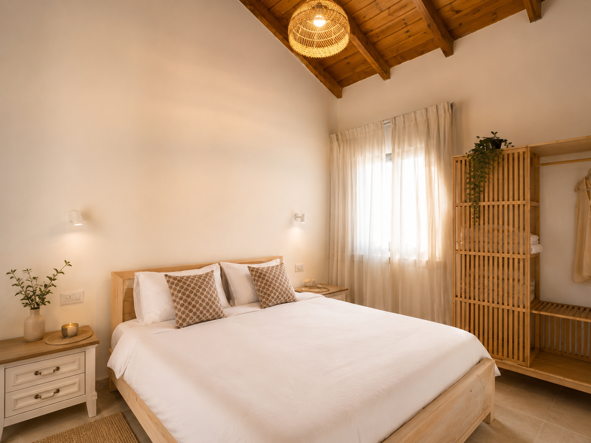
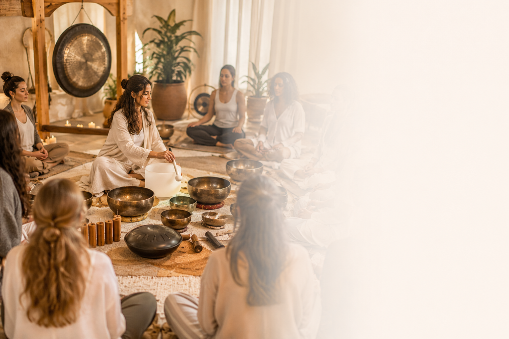
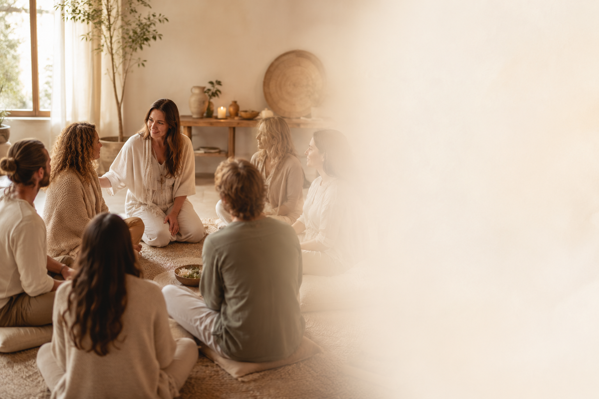
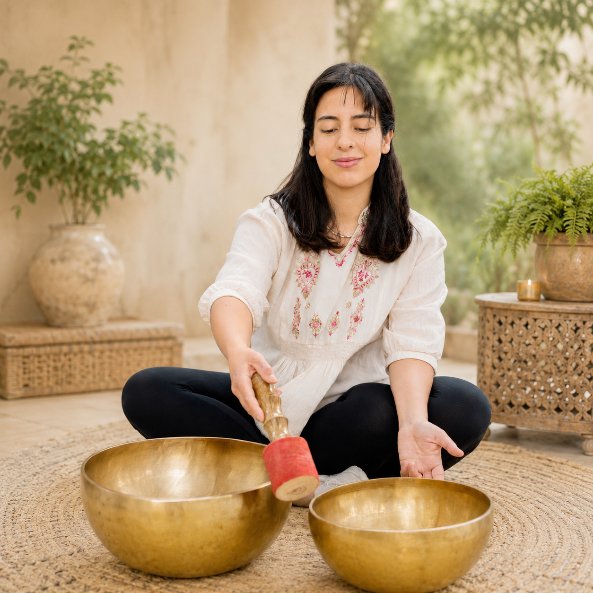
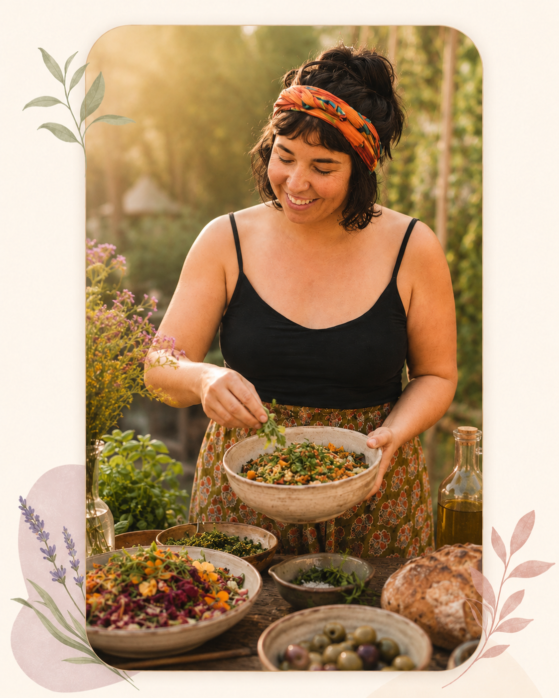
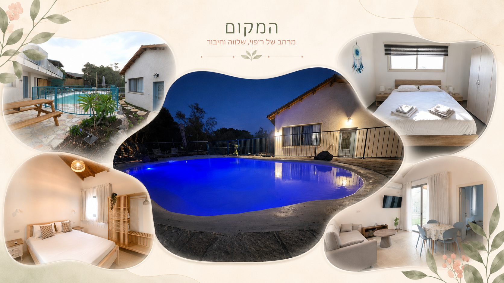
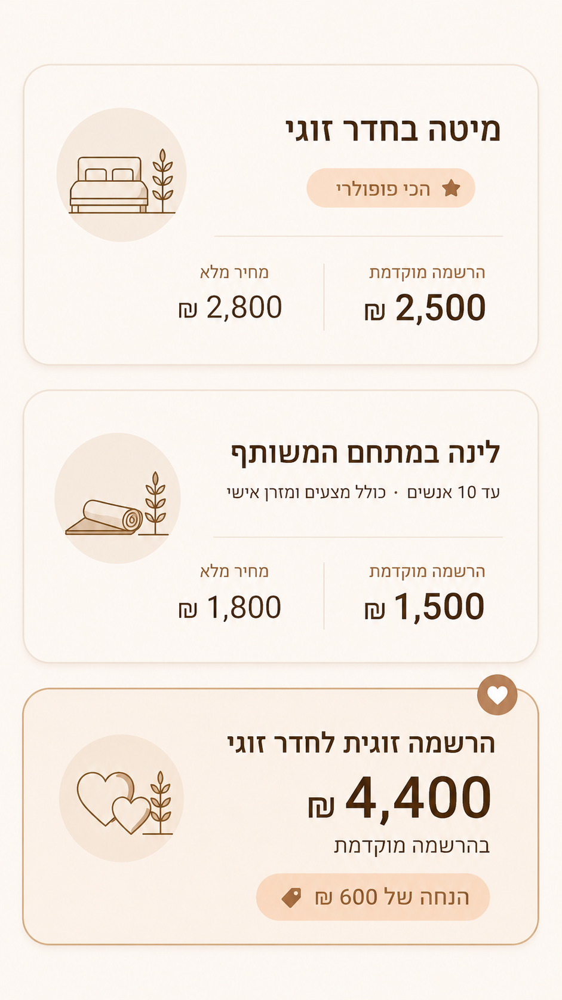

לפעמים הגוף יודע לפני שהמחשבה מבינה
Whispers of the Soul הוא ריטריט סאונד הילינג, קול, תנועה ונשימה בגליל התחתון. מרחב עדין שבו אפשר לעצור את הקצב, לנשום, להרפות ולפגוש מחדש את מה שכבר נמצא בפנים: שקט, חופש, רוח וחיבור לעצמנו.
זהו זמן להיות בלי למהר, בלי להספיק, בלי להחזיק הכל. רק להגיע, לנוח, להקשיב, ולתת לגוף, לצליל ולנשימה להוביל.
אין צורך בניסיון קודם. רק בנכונות להגיע.
מה כלול בריטריט
לינה
לינה שקטה ונוחה בסביבה מכילה לאורך כל סוף השבוע

ארוחות
ארוחות מלאות — ערב, בוקר וצהריים — עם מרכיבים טריים
סשני סאונד הילינג
שלושה סשני צלילים עמוקים עם קערות, גונג וכלי נגינה אורגניים

קול, תנועה ונשימה
תרגול קול, תנועה רכה ונשימה מודעת בקבוצה אינטימית
זמן חופשי
מרחב אישי לשקט, הפנמה ומנוחה — לא כל הזמן מתוכנן
ליווי אישי
קבוצה קטנה ואינטימית עם ליווי קרוב לאורך כל סוף השבוע

לו״ז הריטריט
מבנה עדין שמשלב עומק, מנוחה ומרחב אישי.
- 16:00הגעה, ארוחה קלה והתמקמות
- 17:00מעגל פתיחה
- 18:00ארוחת ערב
- 20:00סשן צלילים מרפאים לתוך הלילה
- 08:30שיעור יוגה
- 09:30ארוחת בוקר
- 11:30–13:00מוסיקה כראי לנשמה: סדנת תרפיה בקול ותנועה
- 13:00–14:00ארוחת צהריים
- 14:00–17:00זמן חופשי
- 17:00–18:00התארגנות לשבת
- 18:00–18:30קבלת שבת מוזיקלית
- 18:30–20:00ארוחת ערב
- 20:00מעגל שירה לאור נרות לתוך הלילה
- 08:30–09:30שיעור תרפיה בתנועה עם שקד
- 09:30ארוחת בוקר
- 11:00–12:30יצירת לוח חזון
- 13:00–14:00ארוחת צהריים
- 14:30–15:30מעגל סיכום 🌺
- 16:00יציאה חזרה הביתה 💜
הצוות

שקד
מנחת סדנאות סאונד הילינג ותרפיסטית דרך קול ותנועה. מאמינה שהביטוי שלנו הוא הריפוי שלנו ומלווה אנשים דרך לביטוי והגשמה עצמית. שרה ויוצרת שירים מקוריים.
מור
בת 46, נשואה ואמא לשלושה. מעל 15 שנים צועדת בשבילי הרוח, הריפוי הטבעי, ההתפתחות האישית , היוגה והמדיטציה. מורה להאטה, ראג'ה וקונדליני יוגה, מטפלת בשיטת אייפק משולב תודעה. יוצרת מרחבים שיש בהם טרנספורמציה וריפוי מהשורש, מקימת קהילות נשים, מעבירה סדנאות ותמיד מגיעה עם לב פתוח והקשבה מלאה לרגע הזה

תמרה
תמרה יוצרת מרחב של הזנה, חום וחיבור דרך אוכל צבעוני, טבעי ואוהב. הגישה שלה מביאה למפגש תשומת לב, נוכחות ותחושת בית.
שרה כליפה
מטפלת בדיקור סיני, עיסוי שמנים ושיאצו, עם התמחות בדיקור ילדים ובעיסוי נשים. קשובה לגוף ולאדם שמגיע, ומסייעת בהרפיית שרירים, שחרור מתחים ותמיכה בריפוי טבעי ועדין.
המקום
הריטריט מתקיים במקום שקט בליבנים, מול נוף פתוח ובמרחק נגיעה מהכנרת, כזה שמאפשר כבר מהרגע הראשון להאט את הקצב, לנשום עמוק ולהרגיש שהיומיום נשאר קצת מאחור.
- חוויה של שקט | ליבנים | גליל-תחתון
- סביבה ירוקה ומרגיעה
- חדרי לינה נוחים
- נגישות ברכב + חניה

מחירים
מספר מקומות מוגבל.

קישור לתשלום ישלח בהרשמה !!!
שאלות נפוצות
האם צריך ניסיון קודם בסאונד הילינג?
לא. הריטריט מתאים גם למי שמגיע בפעם הראשונה. המנחות מלוות כל אחד ואחת בקצב שלו ובצרכים שלו.
מה לובשים?
לבוש נוח, רפוי ומשוחרר שמתאים לתנועה ולמנוחה. כדאי להביא שכבות לערב.
האם הריטריט מתאים לכולם?
כן. מתאים לכל מי שמחפש מרחב של שקט ומנוחה, ללא קשר לגיל, ניסיון או רקע.
האם זו תכנית טיפולית?
לא. הריטריט הוא מרחב של הקשבה, מנוחה ורגיעה — לא פסיכותרפיה או טיפול רפואי מכל סוג.
מה קורה אם אני נרדמ/ת בסשן הצלילים?
זה בסדר גמור. גוף שנרדם הוא גוף שסומך. זה חלק מהחוויה ולא בעיה בכלל.
כמה אנשים יהיו בריטריט?
הריטריט הוא אינטימי ומוגבל במקומות. המספר המדויק יפורסם עם הפרטים הסופיים — אנחנו מקפידים על קבוצה קטנה.
איך נרשמים?
שולחים הודעה בוואטסאפ ואנחנו נחזור אליכם עם כל הפרטים ואיך להשלים את הרישום.